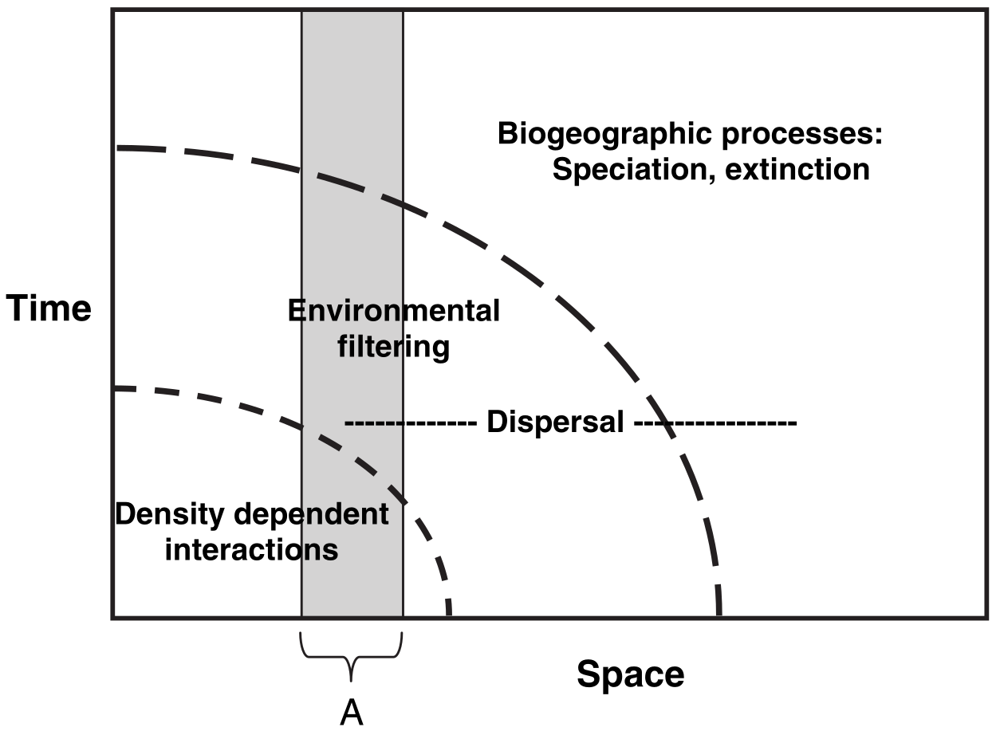
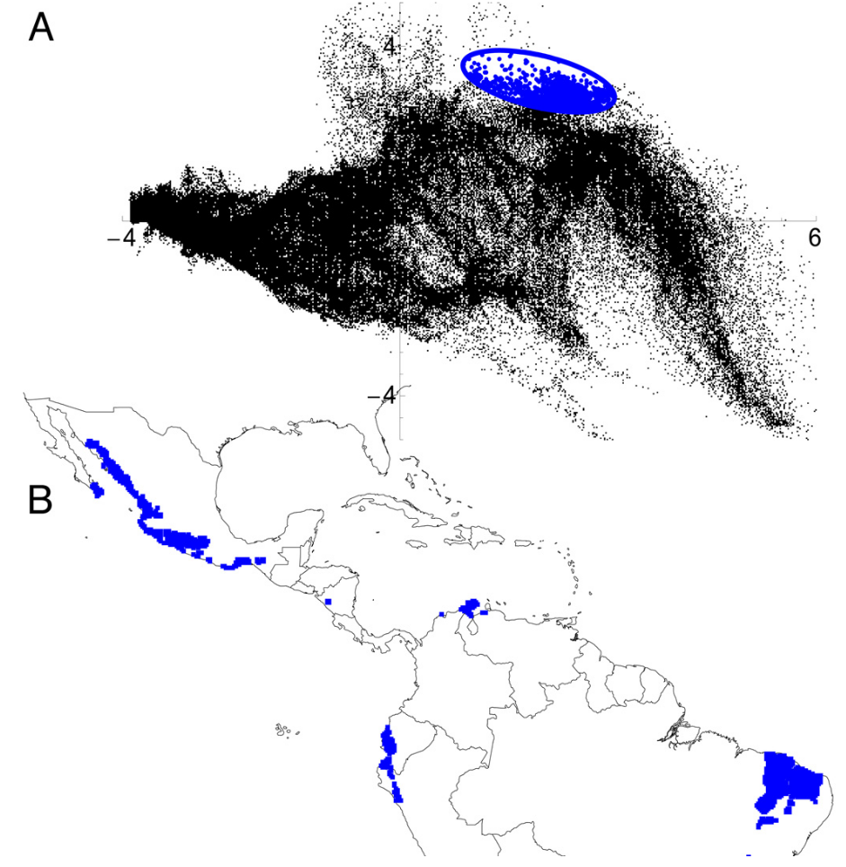

#Downloading species data
if(!require(biomod2)){
install.packages("biomod2")
}
if(!require(rnaturalearth)){
install.packages("rnaturalearth")
}
if(!require(geodata)){
install.packages("geodata")
}
if(!require(terra)){
install.packages("terra")
}
library(biomod2)
library(rnaturalearth)
library(geodata)
library(terra)
world <- ne_countries(scale = "large", returnclass = "sv")
europe_extent <- ext(-20,50,35,70) #Rough coordinates for EU
europe_shapefile <- crop(world, europe_extent)
genus_name <- "Pipistrellus"
species_name <- "pipistrellus"
full_name <- paste(genus_name, species_name, sep = " ")
#This currently only downloads 100,000 of the ~3 million possible records.
#Alter the end parameter if you want this to change.
europe_occurrences <- sp_occurrence(genus_name, species_name,
ext = europe_extent, down = T,
removeZeros = T, fixnames = T, end = 10000)
long_lats <- data.frame(cbind(europe_occurrences$lon, europe_occurrences$lat))
names(long_lats) <- c("long","lat")Spatial Analysis and Autocorrelation
Overview
Modelling diseases is tough. You need to understand how they’re transmitted, how they affect hosts, and the rate at which they grow. So understanding vector-bourne diseases is arguably even worse, because now you also need to understand how the vectors of those diseases move around, are (not) affected by a pathogen they’re transmitting, the rate at which they grow, and how they transmit that pathogen on. What a nightmare!
Luckily for us, there is a whole field of study - distribution modelling - that focuses on understanding the conditions under which species (including vectors) can move around. It’s a massive field (arguably it’s the whole of ecology!) and so there isn’t really time to do it justice in one session. But even more luckily for us, there is a reasonably well-accepted set of standards you can adhere to when building a distribution model. In this tutorial, we’re going to go through that set of standards - which come from the Araujo et al. (2019) paper you can find in the ‘resources’ folder - and then show you how to apply them to model the distribution of a bat.
Your task, should you choose to accept it, is to (1) listen to the lecture at the beginning of the session (or, if you’re reading this online, watch the accompanying video), (2) read through this handout, (3) run the code in this handout, and then (4) see if you can improve the exemplar code for building a bat distribution model to make it score higher according to the Araujo et al. criteria.
What are ‘The Araujo et al. Criteria’
In a well-cited (~1000 citations at the time of writing) paper, a consortium of well-respected distribution modellers came up with a set of criteria by which the accuracy of distribution models could be judged. To be perfectly honest with you, I don’t think they’re necessarily the best criteria that we could come up with, but I do think they’re reasonably criteria that it would be difficult to strongly disagree with (if you can’t tell, this is high praise!). This means they’re essentially perfect for use in a disease ecology or health setting: they’re reliable. So if you want to publish a report for use by a policy-maker, or that will inform a decision, you really can’t do much better than by using these criteria.
These criteria are also very straightforward. There are lots of sub-criteria that we’ll go through now, but they boil down to four things: make sure (1) the data on where a vector is (not) found are reliable, (2) the data you’ll use to predict where that vector could/will be make biological sense for that vector, (3) fit your statistical or mechanistic model properly, and (4) check that model and its predictions properly. There are a lot of devils in the details that we’re leaving out here, but that’s what it boils down to. So let’s get stuck in.
1. Make sure your observation data aren’t rubbish
One of the great things about scientists is we’re all really weird, and we’re all really weird in unique and exciting ways. Ecologists tend to be weird in two particular ways: they’re absolutely obsessed with ‘spatio-temporal scaling’ and taxonomic identification. There are five different criteria by which the Araujo et al. review judges the ‘response variable’ of a distribution model - the data informing whether a species is present or absent in a particular place - but perhaps the most important, and counter-intuitive for a non-ecologist, are these two. So let’s focus on those two.
1.1 Spatio-temporal scaling.

The figure above shows what distribution modellers and ecologists mean by spatio-temporal scaling. To an ecologist, when you look across a wider area of space, you are also implicitly taking into account a longer period of time. This means that the kinds of processes, and the kinds of statistical models you need to fit, vary depending on the spatial and temporal scale of interest. For example, if you wanted to predict how many species of plants would be found in a 10cm x 10cm patch of forest over the next five seconds, you wouldn’t really need to account for evolutionary forces. You just need to know the climate conditions right now, the plants found within a few meters of the patch (because they could disperse over), and then you’d be set. Short region, short period of time. But if you wanted to know how many species of plants would be found in a 100km x 100km patch… that would be more complicated. Within that patch there is a huge amount of variation in climate conditions, so you need to understand how species can move across landscapes within that patch, and as species can move over years/decades/centuries within that patch you need to go years/decades/centries further back in time. That, in turn, means you need to start thinking about evolution - what kinds of species could, and have, evolved in that patch of land? But evolution can take millions of years… and so we need to think much further back in time. What a nightmare! But at least in the larger patch, you no longer care about tiny variations in climate between blades of grass - those kinds of processes are averaged out at the larger scale.
Believe it or not, that’s what Cavender-Bares et al. (2009; paper in the resources as well) were trying to show with this figure. As you widen the spatial scale (horizontal axis) you widen the temporal scale (vertical axis), and so you have to change the kinds of processes you care about. This matters for modelling the distributions of vectors because you have to make sure the data you’re collecting are at the appropriate spatial and temporal scale for your question and vector species. There is no point in grouping recordings of mosquito presence/absence in ten-year increments across 10km x 10km grid-cells: individual mosquitoes don’t live that long or range that far. Thus there’s also no point in building your distribution model with data at that scale.
1.2 Taxonomic identification
If you’re an epidemiologist, you’re probably already very aware that it’s hard to identify what particular disease someone has. Imagine someone walks into a clinic and they say their head hurts and asks you what’s wrong with them. You would have to ask follow-up questions (where? for how long?), look at them (are they bleeding from somewhere? how are their pupils?), and maybe conduct follow-up tests (give them an X-ray or MRI). Not every test would be informative for every set of symptoms or disease, and someone who isn’t trained in interpreting a test, even if the right one is given, could make the wrong diagnosis.
Identifying vectors is much the same thing. For example, there are lots of different kinds of bats, and while they may all look the same to the casual observer they still aren’t the same species and they don’t necessarily carry the same diseases. Distribution modellers have access to a huge amount of data on different species through a number of sources, but the most commonly used (and largest) is (GBIF)[https://gbif.org]. It scoops up data from all kinds of sources - peer-reviewed literature, government schemes, citizen science schemes - everything! And I will put my neck out on the line and say that if you’re not using GBIF you need to have a really good reason not to, because the biases induced by ignoring all that data are often (but not always) bigger than the biases induced by trying to do all the data collection and curation yourself.
But you do need to be aware of the biases in GBIF. There are different kinds of data you can pull in (‘human observations’ that are taken from direct sighting from anyone, ‘preserved specimens’ that are observations vouchered in a central repository somewhere, ‘machine observations’ that are computer-derived observations from recorings/pictures, and many more). There are also different levels of confidence in the observations (seen, dissected and confirmed, DNA-verified, and many more). What are you working with? This matters for modelling the distributions of vectors because you have to make sure the data you’re collecting is actually relevant to the species you have carefully defined as your vector. “Garbage in, garbage out”: if you feed in a load of data about unrelated species then all your model diagnostic checks might pass but you won’t learn anything about the species you actually care about.
1.3 Putting it into practice.
Below is some code that loads data on the pipstrelle bat from GBIF into R. Run it and make sure you’re comfortable with it.
OK, now it’s time to make it better. Can you:
- Figure out what the spatial resolution of the data is. Is it appropriate?
- Figure out where the data is coming from (machine observations, human observations, etc.). Are you happy with the choices?
- Can you filter out known mistakes in the spatial location of the observations?
- Go through the Araujo table in the resources. What medal rating would you give your analysis so far under the first group? Why? Ignore ‘1E’ in the table until you get to section ‘3.1’ below.
- Check the above with a demonstrator (if you haven’t already!)
2 Make sure your environmental data aren’t rubbish
Distribution modellers care about the data used to predict species’ distributions just as much as they do the data they have on species’ distributions. Those data are often called ‘explanatory variables’ because they are the data that explain species’ distributions. They commonly include environmental conditions such as temperature or rainfall, but they can also include other factors such as the distributions of other species (e.g., species that might prey upon, or be food for, the species you care about).
2.1 Geographic space vs. environmental space
Space isn’t the final frontier. Distribution modellers often think in terms of two kinds of ‘space’: geographic space and environmental space. Geographic space is the kind of space you’re used to thinking about: the location and time at which an observation was made (e.g., the latitude, longitude, date, and time). Environmental space is the environmental conditions associated with that observation, such as the temperature, precipitation, or underlying geology.

This terminology is important to understand because you will very often hear, or read, distribution modellers talking about “E Space” or “G space” (for environmental and geographic space, respectively), and if you don’t know these terms you’ll think they’ve taken an illicit substance. This matters for modelling the distributions of vectors because the processes in your model are fit within E space and the biases are often in G space. If you’re going to fit a model that captures the processes relevant to your vector, you need to think about what, in E space, is important for that species. Take bats as an example. Bats often have temperature tolerances: they can’t survive in temperatures below a certain threshold at certain times of year. So, in order to model them well, you need to have a model that (1) accounts for the minimum temperature at that time of year and (2) you probably need to have a model that can account for a non-linearity in the response to temperature. We’re talking about environmental data right now, so we don’t need to think too much about #2 (but don’t forget about it!) but you definitely need the right geographic data. You might also want to think about how to fit a model that can account for those biases in G space (e.g., unevenly sampled data through time and across space), but that’s for another section…
2.2 Putting it into practice
Below is some code that loads some environmental data for use with the pipistrelle data. Run it and make sure you’re comfortable with it.
#Downloading environmental data
#Information on bioclim variables can be found here: https://www.worldclim.org/data/bioclim.html
europe_bioclim <- worldclim_global(res = "10", var = "bio", path = ".")
europe_bioclim <- terra::crop(europe_bioclim, europe_extent)
europe_bioclim_future <- cmip6_world(model = "ACCESS-CM2", ssp ="585", time = "2061-2080", var = "bioc", res = "10", path = ".")
europe_bioclim_future <- terra::crop(europe_bioclim_future, europe_bioclim)OK, now it’s time to make it better. Can you:
- Figure out what the spatial resolution of the environmental data is. Is it appropriate and does it match to the scale of the bat data?
- Do you have any idea of the uncertainty associated with the data? How accurate is it? Can you find out?
- Go through the Araujo table in the resources. What medal rating would you give your analysis so far under the first and second groups? Why?
- Can you improve your rating by making use of other data? Consider Googling CHELSA and AREAData (warning: your demonstrators are contractually obliged to like analyses that make use of AREAData).
- Check the above with a demonstrator (if you haven’t already!)
3 Model building
Model building is, I think, the hardest one to describe because it’s the most contentious. Quite reasonably, researchers often want to know what the best model to use to model a species’ distribution is, but sadly there rarely is a “best” model. I like to think of it as a case of every model being, objectively, the best at fitting the kind of model it is. It’s just that, subjectively, we often want models that emphasise different things. That said, there are a few general helpers we can make use of.
3.1 Pseudo-absences and model extent
I’ve been a very naughty boy: I’ve saved a discussion of pseudo-absences and model extent until this section, even though strictly speaking. That’s because, while Araujo et al. put pseudo-absences in the first section (and I really can see why), I think it’s hard to talk about them without talking about model-fitting. And I’m writing this tutorial, not them, so I can do whatever I want. Sorry if it’s a bit confusing to talk about crtierion 1E in section 3.
When modelling where species are found, it’s very useful to know where they’re not found. This absence information can help us distinguish determine what the limits to species’ distributions are, for example. The problem is that we rarely, if ever, have data on where species weren’t found. There are millions of species on Earth and essentially infinite places to look for them, and it’s hard enough to store where species were seen on GBIF let alone where species weren’t seen. Further, when people go out surveying, they are often looking for something and it turns out that humans quite often miss things they’re not looking for, so we don’t have a lot of surveys of absences.
This matters for modelling the distributions of vectors because, as a result, species distribution models generate ‘pseudo-absences’ - they make up absences - in order to be able to fit statistical models. With the notable exception of one-class support-vector machines (which are very good methods - come take my class in them or ask me about them if you like) we cannot fit species distribution models with data only on where species are seen. Thus models randomly pick from the ‘background’ of the model a series of random points where species weren’t seen and treat those as if they were real absences and then fit the models.
If this seems awful to you, then fair enough because it seems awful to me too, but with the exception of one-class support vector machines that’s the only option we have. There are ways of doing pseudo-absences in a sensible way, but the most important rules of thumb are (1) read what the algorithm is doing and make sure its assumptions are appropriate for your species, (2) make sure you’ve got data from across a wide enough region (both in G and E space) that you have picked up conditions where the species isn’t found, and (3) do what randomisation you are using for the pseudo-absences lots of times so you can average across the uncertainty it introduces. If you are ever reading a distribution modelling paper and it doesn’t mention pseudo-absences somewhere then honestly you can just put it down and read something else. It’s that important: pseudo-absences are a big deal.
3.2 Distribution models are like regular statistical models so check them properly
Would you ever fit a statistical model without checking whether the explanatory variables were correlated? Don’t answer because I’m sure you would (I know I have!) but we really mustn’t when fitting distribution models. Environmental data are often extremely ‘spatially auto-correlated’, which means that points that are nearby each other tend to be similar. They’re often very correlated in terms of underlying processes: places where it rains a lot tend to have very damp soil, and places where there’s high solar radiation tend to be very hot. These correlated processes can bias the distribution model you get in lots of very confusing ways. For example, if you have lots of variables that are similar (_e.g., where it’s hot, it’s also very dry, and there’s also not a lot of trees) then those variables will ‘compete’ with one-another for variance, such that the three combined seem important in your model but each separately doesn’t seem very important.
Would you ever fit a statistical model without making sure that any bias or uncertainty in your underlying data isn’t accounted for? No, of course you wouldn’t! Alright, let’s be
#Using biomod2 model-building
train_data <- data.frame(full_name = rep(1,nrow(long_lats)))
pipistrellus_data <- BIOMOD_FormatingData(resp.var = train_data,
expl.var = europe_bioclim,
resp.xy = long_lats,
resp.name = full_name,
PA.nb.rep = 5,
PA.nb.absences = nrow(long_lats),
PA.strategy = 'random',
filter.raster = T)
pipistrellus_model <- BIOMOD_Modeling(bm.format = pipistrellus_data,
modeling.id = 'GAM',
models = "GAM",
CV.strategy = 'kfold',
CV.k = 5,
CV.nb.rep = 3,
#CV.perc = 0.8,
OPT.strategy = 'default',
var.import = 3,
metric.eval = c('TSS','ROC'))#Evaluating and plotting models
all_data_models <- get_built_models(pipistrellus_model, PA = "allData")
bm_PlotResponseCurves(pipistrellus_model, models = all_data_models)
names(europe_bioclim_future) <- names(europe_bioclim)
pipistrellus_current <- BIOMOD_Projection(bm.mod = pipistrellus_model,
proj.name = 'Current',
new.env = europe_bioclim,
models.chosen = 'all',
metric.binary = 'all',
metric.filter = 'all',
build.clamping.mask = TRUE)
pipistrellus_future <- BIOMOD_Projection(bm.mod = pipistrellus_model,
proj.name = 'Future',
new.env = europe_bioclim_future,
models.chosen = 'all',
metric.binary = 'TSS',
build.clamping.mask = TRUE)
current_projections <- get_predictions(pipistrellus_current, metric.binary = "TSS")
future_projections <- get_predictions(pipistrellus_future, metric.binary = "TSS")
pipistrelle_rangesize_change <- BIOMOD_RangeSize(
proj.current = current_projections,
proj.future = future_projections)
plot(current_projections$Pipistrellus.pipistrellus_allData_allRun_GAM)
plot(pipistrelle_rangesize_change$Diff.By.Pixel[[4]])